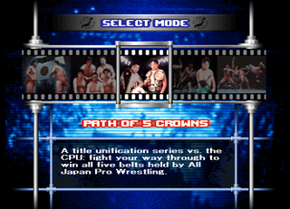
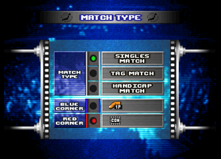
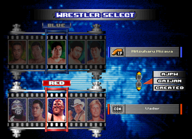
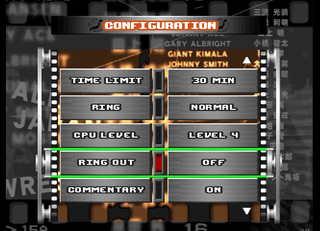
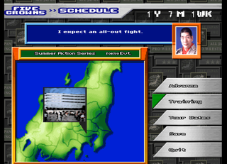
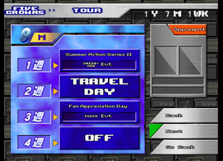
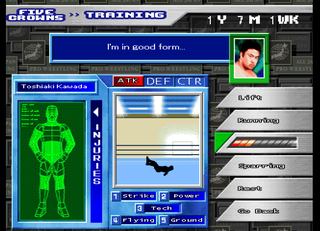
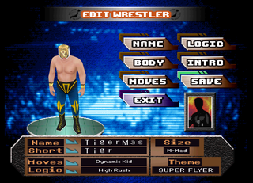

The Game
Zen Nippon Pro Wrestling: Ouja no Tamashii (全日本プロレス 王者の魂, "All Japan Pro Wrestling: Soul of the Champion") is a 3D wrestling game developed and published by Human for the PlayStation. It came out in Japan on 8 April 1999 (SLPS-01849), about two months after Giant Baba's death, and it has his voice on colour commentary. Spike later reissued it in its Spike Library (2000) and as a PS one Book (2001). It was never released outside Japan.
The game's title is the name of Baba's entrance theme. It is an All Japan game through and through: the real 1999 roster, the promotion's tours and title belts, and a career mode in which Baba himself books your matches and judges your work. It plays slowly and deliberately, like All Japan's matches did. Wrestlers tire, near-falls come down to the count of 2.9, and the match is a contest of who runs out of fight first.
- The clutch system. Grapples start with a clutch, a grip chosen with a button, and each clutch has its own follow-up moves. See Clutches.
- Souls. Every wrestler has a few Souls to spend on his biggest moves or on kicking out of a pin he couldn't otherwise escape. See The Soul Button.
- Path of the Five Crowns. A one- or two-year career on All Japan's real tour schedule, with training, injuries, tag partners, title shots and Baba's verdict at the end. See Path of the Five Crowns.
- Edit Wrestler. Create a wrestler from 44 body types, 58 move sets and 19 logic (AI) types. Many of them belong to 76 fictional wrestlers, lookalikes of stars from other promotions. See Edit Wrestler.
Up to four people can play with a Multitap. Save data goes on a Memory Card.
Which Patch?
The translation comes as three patches; each one is applied to the original Japanese disc image on its own. The README explains how.
| Patch | What you get |
|---|---|
| English | The translation and nothing else. The game plays exactly as it did in 1999, unlocks included. |
| English + Unlocks | The translation with everything open from the start: Title Match and Survival Match on the mode select, every Edit Wrestler part (and the hidden bodies), and the full Path of the Five Crowns rosters. See Secrets for what each one normally takes. |
| Japan + Unlocks | The original Japanese game with the same unlocks. |
Some art stays in Japanese on purpose: the title logo, the brush-lettered name banners in the entrances, and the big title cards before championship matches. Their meanings are in the glossary.
Modes

Press START on the title screen to go to SELECT MODE. The modes sit on a filmstrip; turn it with left and right on the d-pad. Eight modes are there from the start. Title Match appears once you clear a chapter of Path of the Five Crowns, and Survival Match is hidden (see Secrets).
| Mode | Japanese | What it is |
|---|---|---|
| Path of 5 Crowns | 五冠王の軌跡 | The career mode. Wrestle a year or two of All Japan's tours and earn a Triple Crown title shot. See Path of the Five Crowns. |
| Exhibition | エキシビジョンマッチ | A one-off match with any wrestlers you like: singles, tag or handicap. |
| Champion Carnival | チャンピオン・カーニバル | All Japan's spring singles tournament: a round-robin league for up to 32 wrestlers. |
| World Tag League | 世界最強タッグ決定リーグ戦 | The year-end tag tournament: a round-robin league for up to 16 teams. |
| Battle Royal | バトルロイヤル | Every man for himself, with up to four wrestlers in the ring at once. |
| Manage Data | データ管理 | Memory Card work: register created wrestlers for use in matches, and load or save the system data. |
| Edit Wrestler | レスラーエディット | Create your own wrestler. See Edit Wrestler. |
| Options | オプション | Sound, volume, music and sound tests, vibration. |
| Title Match | タイトルマッチ | Defend the singles and tag belts and chase the record for defences. Unlocked by clearing a Five Crowns chapter. |
| Survival Match | サバイバルマッチ | Five-man teams in an elimination series of singles and tag matches. Hidden. |
A match is set up in three steps. MATCH TYPE picks singles, tag or handicap and who plays each corner: the Blue Corner and the Red Corner each show a player number or COM for the computer. WRESTLER SELECT picks the wrestlers; the tabs at the top switch between All Japan's own wrestlers, the gaijin (foreign wrestlers) and your created wrestlers, and each wrestler has four colours. CONFIGURATION sets the rules (see Match Settings).



The Leagues
Champion Carnival and World Tag League work the same way, one with singles wrestlers and one with teams. Start a new league or load a saved one, enter the wrestlers on the WRESTLER ENTRY screen (○ fills a slot, × clears one, START ends the entry), and choose a format:
| Format | How it's won |
|---|---|
| 1 | A points league. Whoever has the most points at the end wins. |
| 2 | A points league, then a final between the top two on points. |
| 3 | Two leagues, A and B. The leader of each meets the other in a final. |
The league table shows points and each entrant's win-loss-draw record; L switches between the table and the standings, R between leagues A and B, and START saves or quits. You can play every match or let the computer play the ones you're not in (the game asks "Watch the match?"). If the league ends with wrestlers tied on points, the game offers a play-off league among just those wrestlers.
Title Match
Title matches for the Triple Crown Heavyweight and the World Tag Team belts. The game keeps the line of champions and how many times each defended (CHAMPS + MATCH RECORDS), and offers to save them to the system data when you quit. How to unlock it is in Secrets.
Survival Match
Two teams of five, in Singles or Tag form: you set the order, and the losers drop out until one team is left. You can build a team from scratch (New Team) or take one of All Japan's real factions: the Super Gen. Army (Misawa's 超世代軍), the Holy Demon Army (Kawada and Taue's 聖鬼軍), the Family Army (ファミリー軍団), the Asunaro Warriors (あすなろ戦士) and the Old Super Gen. Survival Match can't be unlocked in the original game; see Secrets.
Manage Data and Options
Manage Data loads and saves the system data (registered wrestlers, unlocks, records) and moves created wrestlers between the Memory Card and the game's Edit Slots. A created wrestler must be registered in a slot before you can use him in a match. You can also erase the Champion Carnival, Tag League or title records here. Path of the Five Crowns and the leagues save separately, from inside their modes.
Options has Sound (stereo or mono), Music and SFX volume, Vibration, a Sound Test and a Music Test with the entrance themes, Baba's own Ouja no Tamashii, the NTV Sports Theme and Misawa's Spartan X among them.
Save the system data after clearing a Five Crowns chapter. The unlock is kept in the system data, so it is lost if you switch off without saving.
Match Settings
The CONFIGURATION screen comes after the wrestler select. Pick START MATCH to go to the ring, or GO BACK to change the wrestlers.
| Setting | Choices | What it does |
|---|---|---|
| Time Limit | 30 min, 45 min, 60 min, No Limit | The match is a draw when time runs out. All Japan's title matches were 60 minutes. |
| Falls | 1 Fall, 2 out of 3 | One fall, or best two out of three. |
| CPU Level | Level 1 to 8 | How hard the computer fights. |
| Tag Team Pin Break | On, Off | Whether partners may run in to break up pins and holds (カットプレイ, "cut play"). |
| Ring Out | 10 Count, 20 Count, Lumberjack, Off | The count when a wrestler is out of the ring. With Lumberjack, wrestlers stand around the ring and throw anyone who leaves it back in. |
| Commentary | On, Off | Giant Baba's colour commentary. |
| Play by Play | On, Off | The announcer's play-by-play. |
| Show Referee | On, Off | Whether the referee is shown. |
| Ring | Normal, Old Style, Original | The ring: Normal, Old Style or Original type. |
Controls
Every wrestler uses the same button layout, but what each button does depends on the wrestler. Each has his own clutches, strikes and finishers. The moves below are Jun Akiyama's. The original game came with a booklet listing every wrestler's moves; the best way to learn your wrestler is to try each button in each position.
The Basics
| Action | Buttons | Notes |
|---|---|---|
| Strikes | □ × ○ | Each button is a different strike, and a direction changes it. Akiyama: □ chop, × kick, ○ low dropkick; with a direction, an elbow, toe kick or dropkick. |
| Grapple (clutch) | R1 + □ × ○ △ | Each button, or pair of buttons, grabs in a different grip. See Clutches. |
| Irish whip | direction + △ | Into the ropes or a corner, depending on where you aim. |
| Throw out of the ring | direction + R1 + △ | |
| Tag your partner | toward him + △ | In your own corner. |
| Running moves | □ × ○ while running | Akiyama: jumping elbow, jumping knee, lariat; a facecrusher from behind. |
| Counter a charge | toward him + R1 + □ × ○ | As the opponent runs at you. |
| Pin | □ at the arm | Stand beside a downed opponent's arm. |
| Power pin | L1 + ○ at the arm | A pin with everything behind it; costs a Soul. |
| Kick out | mash the buttons | Or press L1 to kick out with a Soul. |
| Taunt | SELECT + □ or × | |
| Pause | START | Continue or quit, and the camera: Normal, Ringside, Balcony or Wrestler. |
Your wrestler doesn't turn to face the opponent by himself. Point the d-pad at him before you strike or grapple, or the move goes into thin air.
On the mat. Where you stand matters. At a downed opponent's head, the buttons give stomps and holds on the neck, and R1 + button picks him up into a clutch. At the arm, □ pins and the others give armbars and knee drops. At the legs you get leg holds such as the figure-four and a scorpion deathlock. △ drags him or turns him over. In the corner you get corner strikes, superplexes from the top rope (雪崩式), and dives from the top to a downed opponent.
Fatigue. Every move costs stamina. Throw too much too fast and your wrestler runs out of breath and stands there gasping, open to anything, for a while. Pace yourself the way All Japan's wrestlers did: wear the opponent down, then go for the big moves.
Clutches
Grapples go through a clutch (クラッチ), a grip on the opponent. Each grab button gives a different clutch, and from it the buttons give that clutch's moves: plain buttons for the lighter ones, R1 + button for the stronger or pinning versions, and L1 + △ (or L1 + R1 + △) for the big ones, which cost a Soul. The timing takes practice. Here is Jun Akiyama's set:
| Grab | Clutch | Moves from it |
|---|---|---|
| R1 + △ | Tie-up (collar and elbow) | □ headlock, × flying mare, ○ tombstone, △ hammer throw; R1 + □ go behind, R1 + × body slam, R1 + ○ neckbreaker, R1 + △ throw to the floor; L1 + △ dragon screw, L1 + R1 + △ Blue Thunder |
| R1 + □ | DDT | □ knee lift, × DDT, ○ or △ arm-trap DDT |
| R1 + × | Exploder | □ knee lift, × stomach crusher, ○ or △ Exploder; L1 + △ wrist-clutch Exploder |
| R1 + ○ | Northern Lights | □ elbow, × ○ △ Northern Lights suplex (whip); R1 + × ○ △ Northern Lights suplex hold |
| R1 + □× | Brainbuster | □ body punches, × ○ △ brainbuster; L1 + △ vertical brainbuster |
| R1 + △○ | Double underhook | × double-arm DDT, ○ Pedigree, △ double-arm suplex; L1 + △ Tiger Driver |
| from behind | Backdrop / German | Rear grips for backdrops, German suplexes and Blue Thunder; in a tag match, □ holds him in a full nelson for your partner |
The Soul Button
L1 is the Soul button (魂, tamashii). Each wrestler has a fixed number of Souls by rank: two for young wrestlers, up to four for the top stars. A Soul pays for one of two things:
- A big move: the L1 moves in each clutch, and the power pin.
- A Soul kick-out: press L1 while being pinned to kick out of a pin you'd otherwise lose.
As long as a wrestler has a Soul left he can kick out, so a match turns into a battle to drain the other man's Souls before you run out of yours. That is where the game's 2.9 near-falls come from.
How Matches End
Pinfall, submission, a count-out, or the time limit. The result screen names the finish, and the near-falls show on screen as they happen: Count 1, Count 2, Count 2.9, Rope Break (a hold or pin broken by reaching the ropes), Give up, Ring Out. The finishes the game names:
| On screen | Japanese | On screen | Japanese | On screen | Japanese |
|---|
The Roster
The All Japan roster of early 1999: twenty-five wrestlers under their real names, with Jumbo Tsuruta, All Japan's former ace, among them. The # is the wrestler's place in the Edit Wrestler Body Type list; every body is open from the start except Tsuruta's. Five Crowns says which chapter he can be played in; code means he joins only with a button code (see Secrets).
Path of the Five Crowns 五冠王の軌跡
The career mode. Five belts make an All Japan "five-crown champion": the three of the Triple Crown Heavyweight title (the International, United National and PWF Heavyweight belts) and the two of the World Tag Team title (the International Tag and PWF World Tag belts). The intro tells their history, with quotes from Misawa, Kawada and Jumbo Tsuruta.
In practice the goal is set by Giant Baba, who runs the promotion: wrestle the tours, build a record that the fans respect, and earn a shot at the Triple Crown. Every match is judged as well as won or lost. Baba's maxim: "We don't have DQ or count-out losses, so your wins need to be convincing enough to satisfy the crowd."
Choose New to start, Continue to load a save, or Load to play the mode as a created wrestler from the Memory Card.
The Two Chapters
Both chapters start with the Summer Action Series and end in a Triple Crown shot if you've earned it. They differ in the wrestlers you can pick, how long you have, and the schedule. The rosters below are the normal ones; the full lists are in Secrets.
The Royal Road: Succession 王道継承編
Play an established star, in one year.
The Royal Road: Ascent 王道飛躍編
Play a young up-and-comer, in two years.
The Schedule
Each week starts on the SCHEDULE screen. The date bar reads year, month and week (1 Y 7 M 1 WK), the map shows where the tour is, and Baba comments on the coming match. The menu:
- Advance: go on to this week's event.
- Training: train before you advance (see Training). Baba asks if you're sure when you advance without training.
- Tour Dates: the month ahead, week by week. Each week is a series event at a venue (Evt.), a Travel Day or Off. Your card (singles, tag or battle royal, main event or mid-card) and the opponent, or Opponent TBD, show beside it.
- Save: save the career to the Memory Card.
- Quit: leave the mode. The game warns you if you haven't saved.
The tour follows All Japan's real calendar of series, from the Summer Action Series through the Giant Series, the year-end World's Strongest Tag League, the New Year Giant Series and the spring Champion Carnival. Between them come one-off shows: Fan Appreciation Day, the Budokan, the Tokyo Dome.


Training

Training raises your wrestler's ratings: ATK (attack), DEF (defence) and CTR (counters), with five styles under them: Strike, Power, Tech, Flying and Ground. Choose one of:
| Training | Japanese | What it is |
|---|---|---|
| Lift | 筋トレ | Weight training. |
| Running | 走りこみ | Roadwork. |
| Bumps | 受け身 | Practising breakfalls (ukemi): learning to take a move safely. |
| Sparring | スパーリング | Sparring in the ring. |
| Rest | 休養 | Recover instead of training. |
Watch the wrestler's own line at the top: "Feeling good... no problems at all" is what you want, and "My body feels heavy" means rest. The INJURIES diagram marks hurt body parts (neck, elbow, back, knee). Keep fighting hurt and Baba may tell you to sit out the rest of the year.
Events
Besides the weekly tour matches, the career has special events. Each one starts with a title card (in Japanese) and a word from Baba:
| Event | Japanese | What happens |
|---|---|---|
| Choose Your Tag Partner | タッグパートナー指名 | Pick your partner for the tag titles and the tag league. You keep him until the next chance, so choose carefully. |
| Reverse Nomination | 逆指名 | Another wrestler asks you to be his partner. |
| World Tag Team Title Match | 世界タッグ選手権試合 | A shot at the World Tag Team belts. |
| All Asia Tag Team Title Match | アジアタッグ選手権試合 | All Japan's junior tag belts. |
| Triple Crown Heavyweight Title Match | 三冠ヘビー級選手権試合 | The goal of the mode. |
| World's Strongest Tag League Final / Champion Carnival Final | 優勝決定戦 | The finals of the two tournaments. |
| Outside Wrestlers Invade All Japan! / Overseas Wrestlers Invade All Japan! | 他団体レスラー全日本プロレス参戦! | Wrestlers from other promotions, at home or abroad, come to All Japan. |
| Guest Shot Elsewhere! | 他団体参戦 | Wrestle for another promotion: you choose which. |
| Overseas Tour! | 海外マット参戦! | A tour abroad. |
| Dream Singles Match | 夢のシングルマッチ | Choose a legend "who once defined an era" to face. |
| Fan Appreciation Day / AJPW 25th Anniversary Dome Show | ファン感謝デー / ドーム大会 | The special shows. |
Some weeks hold a Secret Match (隠し試合) on the tour dates. We don't yet know what decides it.
Between matches Baba hands out Baba's Maxims (馬場格言), short lessons in his style of wrestling. They're worth reading: they are the closest thing the mode has to a manual.
Tours and Venues
The series on the tour, and the prefectures and arenas the tour visits:
Series
Venues
Baba's Evaluation
At the season's turning points Baba gives his Match Evaluation (馬場試合評価判定): one of ten verdicts on your matches, from a title shot to "start over from scratch". The verdicts weigh your record, whether your matches pleased the crowd, and your health.
Spoiler: the ten verdicts
- The title shot. "Consider the next Triple Crown shot yours."
- The highest praise. "I have nothing to add and nothing left to teach. I'm counting on you to keep leading All Japan as its ace."
- Better than expected. "But the higher you go, the tougher it gets."
- Working hard. "Now the question is whether you'll want to lead the promotion yourself."
- Not quite. "Have you done enough to challenge for the Triple Crown? ...I can't quite say yes."
- Good technique, green psychology. "Set yourself goals and work on them every match."
- Lacking for a main eventer. "Take the rest of the series one match at a time."
- Coasting. "At this point in your career you can't coast."
- Injured. "Rest up this year and aim for a comeback next year."
- Not wrestling at all. "Start over from scratch as a wrestler and take this seriously."
Clearing a chapter lets you save clear data to the Memory Card, and unlocks Title Match and more Edit Wrestler parts (see Secrets).
Edit Wrestler レスラーエディット

Create a new wrestler, or load one from the Memory Card to change him. The menu:
- Name: the full name and a short name, typed in hiragana, katakana, Latin letters (ABC) or kanji.
- Body: size, body type and colour (see Body).
- Moves: the move set. A created wrestler takes a whole move set from one wrestler; you don't pick moves one by one.
- Logic: how the computer fights with him: logic, style and pace (see Logic).
- Intro: his entrance and entrance music.
- Save and Exit. Then register him in an Edit Slot under Manage Data to use him in matches.
Not every part is open at first: clearing each chapter of Path of the Five Crowns opens more. The tables below say which.
Body
Size has twelve steps: four heights (S, M, L, LL), each slim, medium or heavy. Type is the body model, one of the 44 below: every real wrestler's body and those of the fictional wrestlers. Color picks one of the body's four costumes.
Body Types and Move Sets
The lists follow the game's own order. The first 44 names are both a body and a move set; the last 14 are move sets of fictional wrestlers who share another's body.
A body type and its move set always open together. Names marked move set are move sets only.
Logic
Logic is the wrestler's fighting pattern when the computer controls him. Style (こだわり, his preference) picks the kind of move he favours: Counters, Front Throws, Rear Throws, Strikes, Mat Moves or High-Flying. Pace (試合運び, how he builds a match) is Skilled, Average or Poor. Logic types with no tag are open from the start.
| How it fights | Logic types |
|---|
Intro
The entrance and the entrance music. There are entrances; are open from the start, and the rest come with the chapter clears. Press △ to preview the entrance.
The Fictional Wrestlers
Behind the edit bodies are 76 fictional wrestlers, four to each of 19 bodies, one per colour. In the long tradition of Human's Fire Pro Wrestling series, most are thinly disguised stars of other promotions: Steel James, Big the Great Bull, Giant the Roshmoff, Rairyu, Mask de Panther and dozens more. Some appear in Path of the Five Crowns, when outside wrestlers invade All Japan; the first of each body gives its name to the body type. The names come from the game's own costume list.
| Body | Colour 1 | Colour 2 | Colour 3 | Colour 4 |
|---|
Secrets
What the game keeps locked, and how to open it. Everything here is open from the start with the Unlocks patches. The technical side (addresses and how each was found) is in the project's technical notes.
Title Match
Spoiler: how to unlock Title Match
Clear either chapter of Path of the Five Crowns, then save the system data. Title Match appears on the mode select, before Survival Match.
A Japanese cheat site (GAME TRICK!!) reports a special ending in Title Match when Giant Baba beats Mitsuharu Misawa. We haven't seen it ourselves.
Survival Match
Spoiler: how to unlock Survival Match
In the original game, you can't. The mode is finished and works, but the only thing that turns it on is a leftover developer control handler that the game never calls. The Unlocks patches put it on the mode select.
Five Crowns Rosters
Spoiler: button codes for more wrestlers
On the Path of the Five Crowns wrestler select, hold buttons as the screen comes up:
| Hold | Succession | Ascent |
|---|---|---|
| SELECT + R2 | no change | |
| SELECT + R2 + START + L1 |
These were read from the game's code and haven't been tried on a real controller yet. The Unlocks patches always give the full lists.
Edit Wrestler Unlocks
Spoiler: what each chapter clear opens
Clearing Succession opens Jumbo Tsuruta and .
Clearing Ascent opens Jumbo Tsuruta and .
Clear both for everything. A few parts can never be chosen: the move sets , one logic type and three entrances sit past the end of their lists.
Hidden Bodies
Spoiler: the seven hidden bodies
The game holds seven bodies that aren't in the Body Type list: . In Edit Wrestler, choose one of these body types and hold SELECT while you confirm the Body page:
| Body type | Becomes |
|---|---|
| Giant Baba | Referee Kyohei Wada |
| Akira Taue | Takeshi Morishima |
| Masao Inoue, Satoru Asako, Kentaro Shiga, Yoshinobu Kanemaru, Maunakea Mossman | The same wrestler in his track suit |
In the original game this needs both chapters cleared and a setting that nothing in the game turns on, so it can't be done. The Unlocks patches make the trick work and also add the seven bodies to the end of the Body Type list.
Developer Leftovers
Spoiler: what the developers left in
- An entrance editor. A developer tool for staging the entrance scenes: a fixed four-wrestler entrance on a loop, with on-screen debug text (camera position, motion frame, colours) and edit pages on the shoulder buttons. It is switched on only by a saved setting the game never writes.
- Unused parts. Akira Saeba (a lookalike of Akira Maeda) has a move set no one can choose; it, a second copy of Olympia Akutsu's, one logic type and three entrances sit past the end of their menus.
- Hidden bodies. The seven bodies above, among them the young Takeshi Morishima and referee Kyohei Wada.
Japanese Glossary
Terms you'll see on screen in the original game, and in the art the translation leaves in Japanese.
| Japanese | Meaning | On screen in the translation |
|---|---|---|
| 全日本プロレスZen Nihon Puroresu | All Japan Pro Wrestling | AJPW |
| 王者の魂Ōja no Tamashii | Soul of the Champion; Baba's entrance theme | (title logo, kept) |
| 五冠王の軌跡Gokan-ō no Kiseki | The path of the five-crown champion | Path of the 5 Crowns |
| 王道ōdō | The royal road: All Japan's orthodox style | Royal Road |
| 王道継承編Ōdō Keishō-hen | The royal road: the succession chapter | The Royal Road: Succession |
| 王道飛躍編Ōdō Hiyaku-hen | The royal road: the leap chapter | The Royal Road: Ascent |
| 三冠ヘビー級Sankan Hebī-kyū | Triple Crown Heavyweight | Triple Crown Heavyweight |
| 世界タッグSekai Taggu | World Tag | World Tag Team |
| アジアタッグAjia Taggu | Asia Tag | All Asia Tag Team |
| 選手権試合senshuken jiai | Championship match (on the title cards) | (kept) |
| 優勝決定戦yūshō ketteisen | Final | (kept) |
| 公式戦kōshiki-sen | Official league match | (kept) |
| 優勝yūshō | Victory, winning the tournament | (kept) |
| 王ō | King: the champion's marker | (kept) |
| ● × ▲ | Win, loss, draw on the league tables | (kept) |
| 青コーナー / 赤コーナーao / aka kōnā | Blue corner / red corner | Blue / Red Corner |
| 日本人 / 外国人Nihonjin / gaikokujin | Japanese / foreign (wrestlers) | AJPW / Gaijin |
| 一本勝負 / 三本勝負ippon / sanbon shōbu | One-fall / three-fall match | 1 Fall / 2 out of 3 |
| カットプレイkatto purei | Cut play: breaking up pins | Tag Team Pin Break |
| 場外カウントjōgai kaunto | Ring-out count | Ring Out |
| 解説 / 実況kaisetsu / jikkyō | Colour commentary / play-by-play | Commentary / Play by Play |
| 魂tamashii | Soul | (the L1 Soul button) |
| ロジックrojikku | Logic: the AI pattern | Logic |
| こだわりkodawari | Preference, what he insists on | Style |
| 試合運びshiai hakobi | How he builds a match | Pace |
| 入場nyūjō | Entrance | Intro |
| 日程nittei | Schedule | Schedule |
| 月 / 週gatsu / shū | Month / week | M / WK (the tour's week tabs keep 週) |
| 移動日idō-bi | Travel day | Travel Day |
| 隠し試合kakushi jiai | Hidden match | Secret Match |
| 逆指名gyaku-shimei | Reverse nomination | (event card, kept) |
| 馬場格言Baba kakugen | Baba's maxims | (kept) |
| 負傷箇所fushō kasho | Injured areas | Injuries |
| 攻撃 / 防御 / 返しkōgeki / bōgyo / kaeshi | Attack / defence / counter | ATK / DEF / CTR |
| 超世代軍Chōsedai-gun | Super Generation Army: Misawa's faction | Super Gen. Army |
| 聖鬼軍Seiki-gun | Holy Demon Army: Kawada and Taue's team | Holy Demon Army |
Q&A
Is there an English version?
Not from the publisher: the game was only released in Japan. This guide was written alongside an English fan translation, released as a patch for your own copy of the game.
How do I play as Jumbo Tsuruta?
Clear a chapter of Path of the Five Crowns to open his body and move set in Edit Wrestler. He can also be played in the Succession chapter with a button code (see Secrets).
I keep losing, even on CPU level 1.
This is a slow, deliberate game. Mashing gets you nowhere. Face your opponent before every move, win the clutch before you try a big throw, don't burn your stamina early, and save your Souls for the end. Use them to kick out when the count reaches two.
My created wrestler doesn't show up on the wrestler select.
Saving him isn't enough: register him in an Edit Slot under Manage Data, then pick him from the Created tab.
Why is some text still in Japanese?
The translation leaves stylised art alone: the logo, the brush-lettered names in the entrances, and the title cards for championship matches and events. Their meanings are in the glossary.
Credits and Legal
This guide is a non-commercial fan project, not affiliated with or endorsed by Human, Spike or All Japan Pro Wrestling. Zen Nippon Pro Wrestling: Ouja no Tamashii and its names, characters and trademarks belong to their owners.
The text is written in our own words, from play, the game's data and code, and the sources below. It contains no scans or images from any printed guidebook. The screenshots are from the English fan translation.
Sources:
- kenのトイボックス (AMG blog): a player's detailed notes on the controls and Jun Akiyama's moves.
- さるともるたる！: a 1999 review on the clutch and Soul systems and fatigue.
- An archived GeoCities review: the Soul button, the modes and the career goal.
- GAME TRICK!!: the Title Match unlock and the special ending.
- ピコピコ大百科 and ゲーム備忘録: release details and mode descriptions.
- PSX Data Center: release and reissue details.
- キャッチコピー異名一覧: the roster and the fictional wrestlers.
AI assisted with this guide.
The guide text is shared under Creative Commons Attribution-ShareAlike 4.0 (CC BY-SA 4.0; see LICENSE). You're free to share and adapt it, as long as you credit this guide and share alike.
Contributing
Corrections are welcome: open an issue at github.com/kactusken/Ouja-no-Tamashii-English-Translation. We'd especially like to hear about the controls of other wrestlers, the button codes, and what brings on a Secret Match.